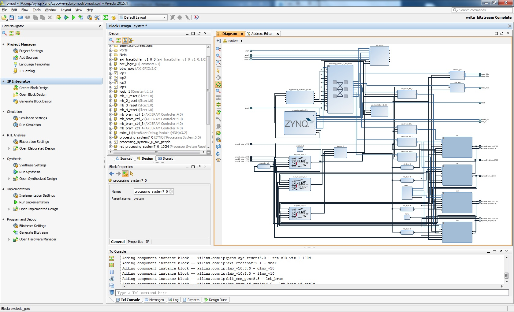

Working with Overlays¶
Creating overlays is done using traditional hardware design methods. This document will describe how overlays can be integrated into Pynq by FPGA/Zynq designers, but will not cover the hardware design process.
While FPGA fabric can be customized to very specific and optimized implementations, a high level of expertise is required to do this, and is much more time consuming compared to creating software.
In Pynq, the key concept when designing hardware overlays is that there should be few overlays used for many different applications.
An overlay should be flexible rather than highly customized, even if this results in a less optimal hardware implementation. This is so that each overlay can be reused by many different applications.
For example, it is recommended that IOPs are used for PMOD interfaces to make the overlay as widely applicable as possible, even where the designer intends to use a specific peripheral for a particular application.
Existing Overlays¶
Two overlays are currently included in the Pynq repository; pmod, and audiovideo. These overlays can be rebuilt in their respective repository folders:
<Pynq GitHub Repository>Pynq/zybo/vivado/pmod<Pynq GitHub Repository>Pynq/zybo/vivado/audiovideo
A makefile exists in each folder that can be used to rebuild the Vivado projects and generate the bitstreams for the overlays. The precompiled overlays are available in <Pynq GitHub Repository>/Pynq/python/pynq/bitstream/ so it is not necessary to rebuild the overlays, which requires a full Vivado installation.
Building a project allows it to be opened in Vivado and examined, or modified to create a new overlay.
{kind=link}
Loading Overlays¶
The PL can be dynamically reconfigured with new overlays as the system is running. This allows Pynq to swap in and out different overlays to support different functionality required by software applications.
This can be in Python done using the Overlay class, part of the Pynq PL package here:
<Pynq GitHub Repository>/Pynq/python/pynq/pl.py
A Bitstream can be downloaded from Python using the overlay class:
from pynq import Overlay
Overlay("audiovideo.bit").download()
Integrating new overlays into Pynq¶
Once a new overlay has been created, the overlay needs to be integrated into the Pynq environment. It is recommended to use an existing Vivado Overlay project as a starting point for a new overlay. This will ensure the settings for the Zynq PS, and the existing PS/PL interfaces are used in the new project.
As with any application running on Zynq, the interface between the software and hardware is via the memory map for the PS and PL.
To help ease the effort to communicate between the ARM Cortex-A9 and programmable logic, Pynq includes the MMIO Python class. Once the Overlay has been created, and the memory map is know, MMIO can be used to read/write to/from the PL memory system.
The Python code for the MMIO can be viewed here:
<Pynq GitHub Repository>/Pynq/python/pynq/mmio.py
An example use of the MMIO class to access an area of 4096 bytes in the PL, starting at address 0x4000_0000 is shown below.
from pynq import MMIO
# an IP is located at 0x4000_0000
myip = MMIO(0x40000000,4096)
# Read from the IP at offset 0
myip.read(0)
Any accesses outside the range (4096 bytes) will cause an error.